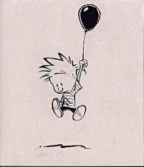

After a slight dip over the last few months, around the world, unwanted feelings are climbing again. Welcome back, anxiety, worry, panic attacks. Boredom too. And let’s not forget anger- so much scream-faced anger.
Oh yay.
We humans spend a lotttttt of time focused on how we feel.
Because feelings matter. They’re important. Everybody knows this.
Everybody knows that feelings communicate, having things to say, particularly about who we are. Everybody knows feelings contain meaning about our past, what we need now, our current state of messed-up-ness.
We agree that feelings contain meaning about the me. The important sense of who we are rides on them.
So it seems feelings do many jobs, busy little things that they are.
They certainly can’t be ignored. Because then they'll just lie in wait for their opportunity to “get” us later, springing up unwelcome at some painfully unexpected time.
Which is why we must always honor them sufficiently. We must sit with, listen to, validate, honor, immerse, and go inward for more.
Certainly we mustn’t take feelings lightly, bypass, or distance from them.
No no, that would be bad.
This viewpoint is everywhere- in therapy, trauma seminars, embodiment workshops, self-help books and podcasts, as well as in woo woo spiritual approaches.
Embodiment - so important.
One of the religions of our time, and not to be questioned. (If you are getting angry reading all this, we’ll take that as proof.)
Yes, the body is where it’s at.
If by “it”, we mean the sense of self.
After all, the body houses the self; it is where me lives, deep inside- located, verified, ensconced.
Along with that delightful sense of broken which comes with personhood.
That’s what we’re worshipping and embodying.
The self.
Y'know, that very non-thing so many are seeking to see through, via turning-towards.
And then, turning towards feelings, if we're lucky we begin to notice a kind of witnessing, that version of “notice your feelings” so so often provided by sages.
Noticing "the witness" does feel better.
To something.
Although interestingly, this witness separates us from the feelings. Because then there’s us the experiencer, us the witnesser, and those feelings- those not-us things being experienced, being allowed, being honored. By us.
Two things.
Hmmm.
How does one get free of a sense of individual self when it's bound to what some singular object feels and experiences?
Now of course none of this is bad. This is how it is for most folks.
It’s just that when we’re the experience-er, we’re by necessity confined, small, buffeted, defined and limited.
Which means embodiment is actually encagement. Enstuckment, ensmallment, enlookinginthewrongplacement.
Maybe what we want is not in there.
So instead, if we’re curious (not required of course), we might try on the possibility that feelings aren’t with us or in us or happening to us. And that maybe we’re not the witnesser of them, the sitter-with, the liker or disliker, or the one transcending them.
And maybe feelings don’t matter so dang much.
Maybe instead we might try on the possibility that we are them.
Rather than the body.
I mean, consider for a moment that what we are is literally each sensation, each feeling as it passes through, each color, each sound.
And that everything- every anxiety and anger and sadness and joy and quiet- it IS us. We ARE it. They are us.
Then we are all, and we are nothing. We are fluid, fleeting, changeable.
Any sense of placement, of location in a body, of HERE-ness, goes poof.
Existence without me-ness.
Well that’s different.
Can’t transcend that.
I mean, BEING it, and all.
And untied to feeling and self and meaning and experiencing and location,
we are
untethered. Unbound.
Something
is free.
And whatever it is,
it's unembodied.
Click to get your Mind-Tickled every week:
Click here to see Judy on Buddha at the Gas Pump: https://bit.ly/JudyCohenBatgap
